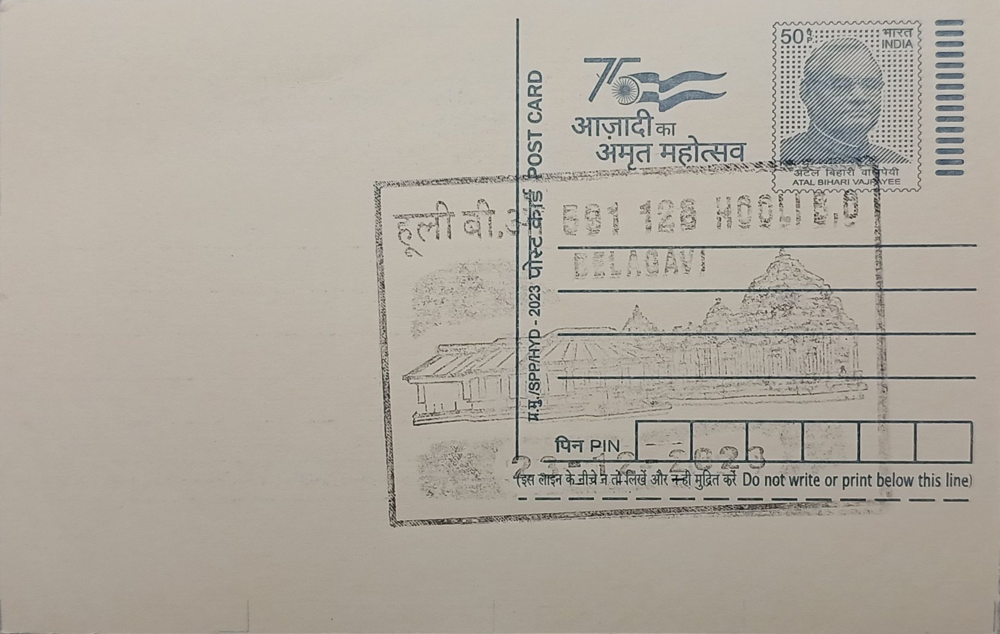

Panchalingeswara Temple
ಪಂಚಲಿಂಗೇಶ್ವರ ದೇವಸ್ಥಾನ


Hooli, the village that hosts the Panchalingeshwara Temple, carries a name that is itself a piece of local etymology: it is said to be a corrupted form of "PooValli," meaning a flowery ear ornament, and the settlement was known in earlier records as Mahishpati Nagar. This linguistic layering mirrors the temple's own identity as a pancha-linga shrine, one of five lingam installations gathered within a single sacred enclosure so that a devotee's circumambulation becomes a condensed pilgrimage, echoing the structure of better-known multi-linga circuits elsewhere in Karnataka such as the Panchalinga Darshan near Mysuru, while remaining rooted in Hooli's own distinct village history.
The temple belongs to the wider category of Shaiva pancha-linga shrines and is one of the principal religious landmarks of Hooli, a village counted among the oldest in the Belagavi region. Its significance is both devotional and historical: Hooli was governed successively by the Rattas of Saundatti and later by the Patwardhans of Ramdurg, and the village's temple cluster, including the Panchalingeshwara and the nearby Trikuteshwara Temple, reflects this layered political history. In recognition of its architectural and historical value, the Panchalingeshwara Temple has been designated a protected monument under the Archaeological Survey of India, placing it among the formally safeguarded heritage structures of Belgaum district.
Architecturally, the temple displays the hallmarks of Chalukyan-influenced construction that characterises much of Hooli's temple cluster, several of which are believed to have originated as Jain bastis before being adapted for Shaiva worship under subsequent Chalukya and Ratta patronage. The five lingams housed within the complex are arranged to allow a continuous circuit of worship, a layout typical of pancha-linga temples and one that gives the shrine its particular ritual function beyond that of a single-sanctum temple. Surviving pillars within the temple bear inscriptions, which have been of interest to epigraphists studying the Ratta period and the broader Chalukya-era temple building activity in the Malaprabha river basin to which Belagavi district belongs.
A distinguishing aspect of Hooli's religious landscape, including the Panchalingeshwara Temple, is the historical presence of the Nath tradition, with the Sant culture associated with Jnaneshwar noted as having had a notable influence in the village. This devotional strand existed alongside orthodox Shaiva pancha-linga worship, giving Hooli's temple precinct a composite character that combined Puranic ritual practice with the more itinerant, yogic Nath lineage. Such overlapping traditions were not unusual in Deccan borderland settlements like Hooli, where successive ruling powers and wandering religious orders left their mark on the same sacred ground over centuries.
In contrast to the Panchalingeshwara Temple's protected status, many of Hooli's other old temples have fallen into disrepair, having suffered from neglect over time, a disparity that underscores how formal ASI protection has concretely preserved this one structure while its neighbours have not fared as well. The temple today functions primarily as a monument of archaeological record alongside continued local worship, maintained under the Archaeological Survey of India's conservation mandate for Belgaum district's centrally protected sites. It stands in that dual capacity, part living shrine and part documented antiquity, within a village whose surviving stonework is now one of the more tangible links to its Ratta-era past.
| Date of Introduction | December 23, 2020 |
|---|---|
| Address | Branch Postmaster, |
| Hooli BO, | |
| Belagavi (dt.), Karnataka - 591126. |